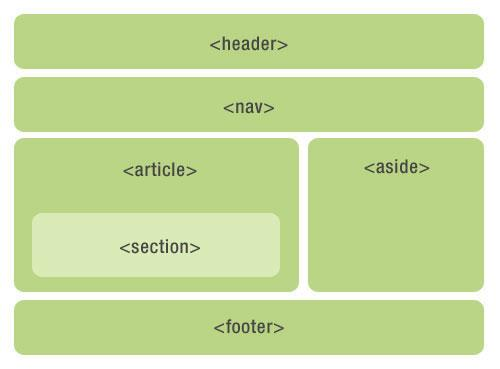

¿Por qué debería ser semántico?
Estructura del código: Incluso si la página no tiene CSS, también puede presentar una buena estructura de contenido.
Bueno para SEO: Los rastreadores confían en las etiquetas para determinar el peso de las palabras clave, por lo que pueden establecer una buena comunicación con los motores de búsqueda para ayudar a los rastreadores a rastrear información más efectiva
Mejora la experiencia del usuario: Por ejemplo, título y alt pueden usarse para explicar el nombre o explicar la información de la imagen y el uso flexible de la etiqueta.
Fácil para el desarrollo y mantenimiento del equipo: La semántica hace que el código sea más legible, permite a otros desarrolladores comprender mejor su estructura html y reduce la diferenciación.
Conveniente para el análisis de otros equipos: Tales como lectores de pantalla, lectores ciegos, dispositivos móviles, etc., muestran páginas web de manera significativa.
Elementos semánticos de uso común en HTML5
HTML5 proporciona nuevos elementos semánticos para definir diferentes partes de la página web, se denominan "elementos de corte", como se muestra en la figura.
pc, programador clic, etiquetas semánticas html. desde https://programmerclick.com/article/3369634503/